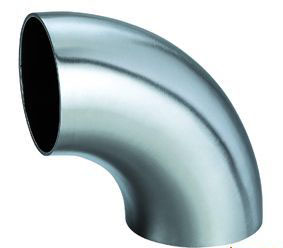

焊接弯头生产的工艺流程，若做长半径弯头，要先选定规格，提出管料。扩径率，通过理论计算，一般扩径率在33%－35%之间，倒推回去。短半径219mm的一般的扩径率为50%.选好原料后，按弯头规格下料，再考虑曲率半径。
比如，90°的弯头，通过其曲率可以算出下多长料可加工出90°的弯头。通过理论计算可算出，然后以该长度为定尺进行切断。最后把料进行热推制。推制机大家可能都看过，实际很简单。它是一个牛角状芯头或芯棒，芯棒由细变粗，推制过程是一个扩径带弯曲的过程。后边有支撑，把下料管段穿入芯棒，后边有一牌坊架将芯棒固定。中间有一小车，小车有的通过液压传动，有的通过机械传动即丝杠传动，然后往前推小车。小车推着管子顺着芯棒往前走，芯棒外有一个感应圈，把管子加热，加热好，然后小车把管子推下，就加工好一个。推好后，弯头要就此热状态下进行整形。因为有的弯头处理不当后，就会扭曲，这是不允许的。
另外，推头后一般都是前端外径大，要通过整形模进行整形。整形模实际上是一个压力机，要有一套模具，两个半圆弧，上下各一个。整形后的外径就达到了成品的尺寸要求了。壁厚就以来料的壁厚进行控制。弯头和管子的壁厚公差都是相同的，均为±12.5%.在推制过程中，正常情况下壁厚不应当发生变化，但如果因为工具原因，有的地方会发生减壁现象，所以一般提料时，壁厚要加一些余量，如弯头是8.18mm的壁厚，一般都提8.5mm左右的管子，防止在推制时由于局部减厚而超差。整好形后，弯头的外径、壁厚尺寸都达到了要求。下面就进行精整工序，经过喷丸处理，把弯头内外表面的氧化铁皮去除，把两端进行坡口处理以便于焊接。再经过检查、打钢字、喷涂漆、包装等工序后，就可以出厂了。
以上是24〃以下以无缝钢管作为原料的弯头生产方法，超过24〃以后即600mm以上的，最大弯头在2.032米~2.80米之间，是用钢板做的。把钢板按要求裁成料后，像UOE成型，也是通过冲模冲压冲成圆形。有两半然后再拼合、焊接。由于焊缝的存在，所以要进行无损探伤。由于有焊接应力的存在，所以还要进行热处理。焊接弯头多了两道工序：一是探伤，一是热处理。其他程序相同。
沧州翼渤翔弯头厂生产经营：冲压弯头,热压弯头,对焊弯头,不锈钢弯头,大口径弯头,碳钢弯头,合金弯头,无缝弯头,直缝弯头,厚壁弯头等各类型弯头，规格齐全，0317-5129679。